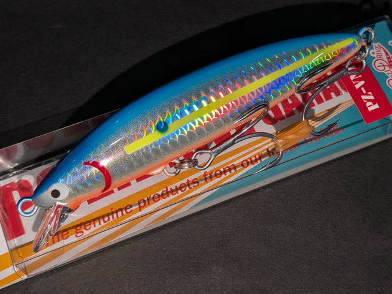
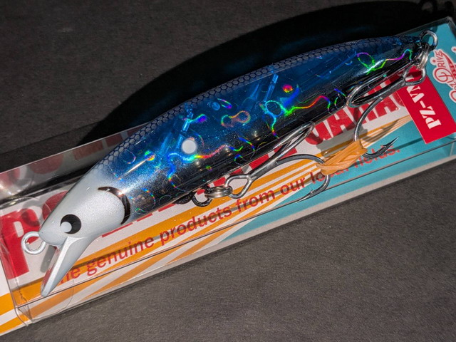
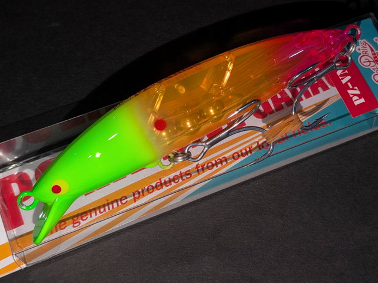

ピーゼットブイエヌ105S サラシニスタ
（PZ-VN 105S）
PZ-VN105S サラシニスタは、ポジドライブガレージの万能コンパクトミノー「PZ-VN105F」を、ヒラスズキ向けにシンキングチューンした限定生産モデルです。
ヘッド側にウエイトを足して沈むようにしたことで、荒れたサラシの中でもレンジを入れて、送り込みやドリフトで食わせられるのが最大の特徴。名前のとおり、サラシ攻略のためのミノーです。

画像出典:キングフィッシャー
スペック
- メーカー
- POZIDRIVE Garage（ポジドライブガレージ）
- 全長
- 105mm
- 自重
- 20g
- タイプ
- シンキング（ヘッド側ウエイト追加のシンキングチューン）
- レンジ
- 80〜150cm
- フック
- #2×2
- リング
- #4
- カラー
- 全5色（限定生産）
- ターゲット
- ヒラスズキ・シーバス
- 価格
- 2,420円（税込）
▼今すぐチェック
PZ-VN105S サラシニスタの特徴
PZ-VN105Fをベースにした、ヒラスズキスペシャルのシンキングチューン
-
ヘッド側への追加ウエイトで沈む
フローティングのPZ-VN105Fのヘッド側にウエイトを足して、シンキングにチューンしている。表層が荒れていても、波に負けずにレンジを入れて泳がせられる。
-
送り込みやドリフトに対応
ラインテンションの調整で、流れやサラシに乗せて送り込んだり、ドリフトさせたりできる。サラシの奥やシモリの陰へ、ルアーを自然に流し込める。
-
コンパクトボディに#2の大きめフック
105mmのコンパクトなボディに、#2の大きめのフックを装備。ヒラスズキのような力の強い魚が掛かっても、やり取りしやすい。
PZ-VN105S サラシニスタの使い方
サラシの中や払い出しにキャストして、ラインのたるみを少し残しながら、波や流れに乗せて送り込むのが基本です。
沈むので、波の下の80〜150cmのレンジを通せます。ラインを張ると泳ぎ、緩めると流れに乗るので、テンションを調整しながらシモリの際やサラシの切れ目まで流し込みましょう。
PZ-VN105S サラシニスタの得意な状況
磯やゴロタの荒れたサラシで、ヒラスズキを狙う場面で出番です。
フローティングのミノーでは浮き上がって波にもまれるような日でも、沈むので波の下のレンジをしっかり通せるのが強み。サラシの中に付いたシーバスにもよく釣れます。
ワンポイント
サラシの中は、白泡の下に魚が付いていることが多いです。白泡の切れ目に向かって送り込み、ルアーが泡から出る瞬間にラインを張って泳がせると、その変化でバイトが出やすくなります。
PZ-VN105F・105Sの違い
| モデル | 自重／タイプ | 得意な場面 |
|---|---|---|
| PZ-VN105F | 19g／フローティング（レンジ60〜120cm） | 河川・港湾など幅広く使える万能コンパクトミノー。フック#3×2 |
| PZ-VN105S サラシニスタ | 20g／シンキング（レンジ80〜150cm） | 荒れたサラシでレンジを入れたい時。送り込みやドリフトに（本記事のモデル）。フック#2×2 |
普段使いや浅い場所は105F、波が高い磯のサラシでレンジを入れたい時は105S サラシニスタと使い分けるのがおすすめ。
人気カラー
PZ-VN105S サラシニスタの人気カラーを紹介します。
 NRH
NRH
ホロのボディにオレンジのヘッド。サラシの白泡の中でも目立つ。

BBライトニングミノーフラッシングの強いミノーカラー。晴れた日中に。

百夜月夜や光量の少ない時間に、シルエットを出したい時に。

トランスマンゴー透け感のあるマンゴーカラー。朝夕のマズメに。
画像出典:キングフィッシャー
▼今すぐチェック
PZ-VN105S サラシニスタに似ているルアー
-
 ピーゼットブイエヌ105F
ポジドライブガレージ
詳細はこちら＞
ピーゼットブイエヌ105F
ポジドライブガレージ
詳細はこちら＞
ベースになったフローティングモデル。浅い場所や河川・港湾で幅広く使いたい時に。
-
 サスケ140S真裂風
アイマ
詳細はこちら＞
サスケ140S真裂風
アイマ
詳細はこちら＞
アクションを抑えたシンキングミノー。より遠く・深くを探りたい時に。
-
 ポップクイーンS105
マリア
詳細はこちら＞
ポップクイーンS105
マリア
詳細はこちら＞
荒れた水面でも使えるシンキングのトップ。サラシの表層で食わせたい時に。